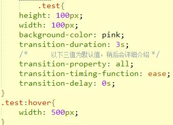
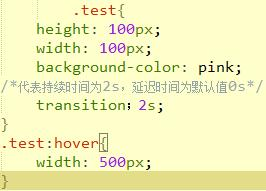

CSS过渡
前面的话
- 通过过渡transition，可以让web前端开发人员不需要javascript就可以实现简单的动画交互效果。过渡属性看似简单，但实际上它有很多需要注意的细节和容易混淆的地方。本文将介绍和梳理关于CSS过渡的知识
定义
- 过渡transition是一个复合属性，包括transition-property、transition-duration、transition-timing-function、transition-delay这四个子属性。通过这四个子属性的配合来完成一个完整的过渡效果
- transition-property: 过渡属性(默认值为all)
- transition-duration: 过渡持续时间(默认值为0s)
- transiton-timing-function: 过渡函数(默认值为ease函数)
- transition-delay: 过渡延迟时间(默认值为0s)
- [注意]IE9-不支持该属性，safari3.1-6、IOS3.2-6.1、android2.1-4.3需要添加-webkit-前缀；而其余高版本浏览器支持标准写法

- 鼠标移动到元素上，会出现宽度变化效果
复合属性
- 过渡transition的这四个子属性只有transition-duration是必需值且不能为0。其中，transition-duration和transition-delay>都是时间。当两个时间同时出现时，第一个是transition-duration，第二个是transition-delay；当只有一个时间时，它是transition-duration，而transition-delay为默认值0
- [注意]transition的这四个子属性之间不能用逗号隔开，只能用空格隔开。因为逗号隔开的代表不同的属性(transition属性支持多值，多值部分稍后介绍)；而空格隔开的代表不同属性的四个关于过渡的子属性

过渡属性
- transition-property
- 值: none | all | transition-property[,transition-property]*
- 初始值: all
- 应用于: 所有元素
- 继承性: 无
- none: 没有指定任何样式
- all: 默认值，表示指定元素所有支持transition-property属性的样式
- transition-property: 可过渡的样式，可用逗号分开写多个样式
可过渡的样式
- 不是所有的CSS样式值都可以过渡，只有具有中间值的属性才具备过渡效果
- Vstart = 开始值; Vend = 结束值; Vres = 中间值; p = 过渡函数的输出值
- Vres = (1 - p) * Vstart + p * Vend
- 当Vres具有有效值时，则该CSS样式可过渡
- 颜色: color background-color border-color outline-color
- 位置: backround-position left right top bottom
- 长度:
- [1]max-height min-height max-width min-width height width
- [2]border-width margin padding outline-width outline-offset
- [3]font-size line-height text-indent vertical-align
- [4]border-spacing letter-spacing word-spacing
- 数字: opacity visibility z-index font-weight zoom
- 组合: text-shadow transform box-shadow clip
- 其他: gradient
过渡持续时间
- 该属性的单位是秒s或毫秒ms
- transition-duration
- 值: time[,time]*
- 初始值: 0s
- 应用于: 所有元素
- 继承性: 无
- [注意]该属性不能为负值
- [注意]若该属性为0s则为默认值，若为0则为无效值。所以必须带单位
- [注意]该值为单值时，即所有过渡属性都对应同样时间；该值为多值时，过渡属性按照顺序对应持续时间
过渡延迟时间
- 该属性定义元素属性延迟多少时间后开始过渡效果，该属性的单位是秒s或毫秒ms
- transition-delay
- 值: time[,time]*
- 初始值: 0s
- 应用于: 所有元素
- 继承性: 无
- [注意]该属性若为负值，无延迟效果，但过渡元素的起始值将从0变成设定值(设定值=延迟时间+持续时间)。若该设定值小于等于0，则无过渡效果；若该设定值大于0，则过渡元素从该设定值开始完成剩余的过渡效果
- [注意]若该属性为0s则为默认值，若为0则为无效值。所以必须带单位
- [注意]该值为单值时，即所有过渡属性都对应同样时间；该值为多值时，过渡属性按照顺序对应持续时间